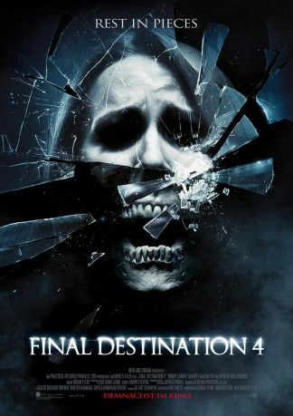

Alternativ: The Final Destination (Englischer Titel)
 
 IMDB-Wertung: 5.2 / 10
IMDB-Wertung: 5.2 / 10  Metascore:
Metascore: 
Nick O’Bannon besucht mit seiner Freundin Lori und den gemeinsamen Freunden Hunt und Janet ein NASCAR-Autorennen. Plötzlich wird Nick von einer mysteriösen Vorahnung gepackt. Er bricht in Panik aus und glaubt, dass ein Unfall auf der Rennstrecke eine Kettenreaktion auslösen wird, die in einer Katastrophe endet. Obwohl sein Anhang Nick für verrückt erklärt, kann er seine Leute gerade noch rechtzeitig dazu bewegen, aus dem Stadion zu fliehen. Als dann tatsächlich alles so eintritt, wie Nick es beschrieben hat, ist die Verwunderung groß.
Jahr: 2009
Dauer: 81 Minuten
FSK: 18
Land: USA Studio: Warner Bros.Tonspuren: DD5.1 - ,
Untertitel: Deutsch,
Auflösung: 1080p (1920x800) Größe: 4802 MB
Genre: Horror
Regisseur: David R. Ellis
Drehbuch: Eric Bress, Jeffrey Reddick
Soundtrack: Brian Tyler
Darsteller:
 Haley Webb als Janet
Haley Webb als Janet Mykelti Williamson als George
Mykelti Williamson als George Krista Allen als MILF / Samantha
Krista Allen als MILF / Samantha Justin Welborn als Racist
Justin Welborn als Racist Stephanie Honoré als Mechanic's Girlfriend
Stephanie Honoré als Mechanic's Girlfriend Lara Grice als Racist's Wife
Lara Grice als Racist's Wife Jackson Walker als Cowboy
Jackson Walker als Cowboy Tina Parker als Cheyenne
Tina Parker als Cheyenne Dane Rhodes als Grandstate Manager
Dane Rhodes als Grandstate Manager Trey Burvant als Theater Manager
Trey Burvant als Theater Manager Brett Beoubay als Country Club Patron / Viper Passenger (uncredited)
Brett Beoubay als Country Club Patron / Viper Passenger (uncredited) Anthony Michael Frederick als Painter (uncredited)
Anthony Michael Frederick als Painter (uncredited) Ali Larter als Clear Rivers (archive footage) (uncredited)
Ali Larter als Clear Rivers (archive footage) (uncredited) Laurie Lee als Upscale Country Club Member / Pool Club Member / Race Fan (uncredited)
Laurie Lee als Upscale Country Club Member / Pool Club Member / Race Fan (uncredited) Jeremy Palko als Construction Worker (uncredited)
Jeremy Palko als Construction Worker (uncredited) Billy Slaughter als Frankie (uncredited)
Billy Slaughter als Frankie (uncredited)Datei: X:\FSK18-Collections\Final Destination\Final Destination 4 (2009, FSK18, 1920x800) 3D.mkv seit 24.04.2019
Festplatte: FSK18
 Es gibt insgesamt 10 Filme in der Gruppe 'FSK18-Collections\Final Destination'
Es gibt insgesamt 10 Filme in der Gruppe 'FSK18-Collections\Final Destination'